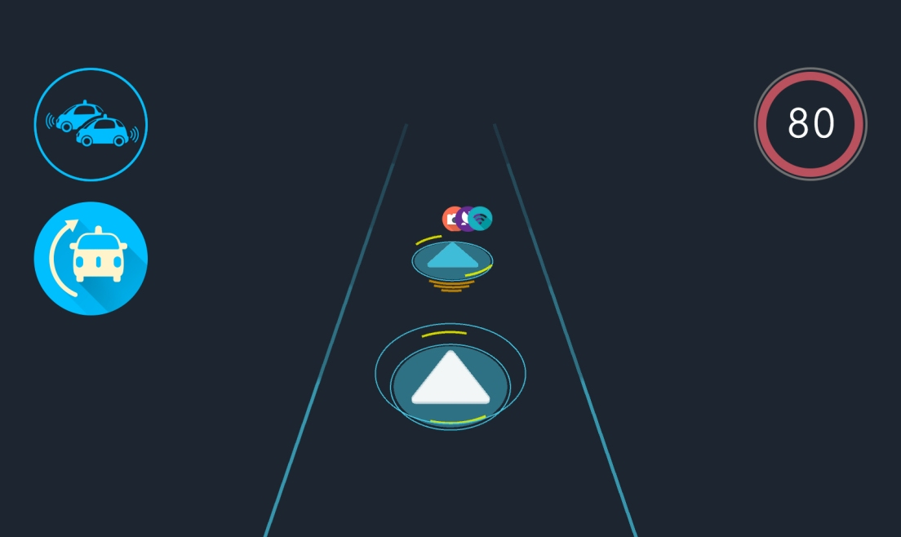
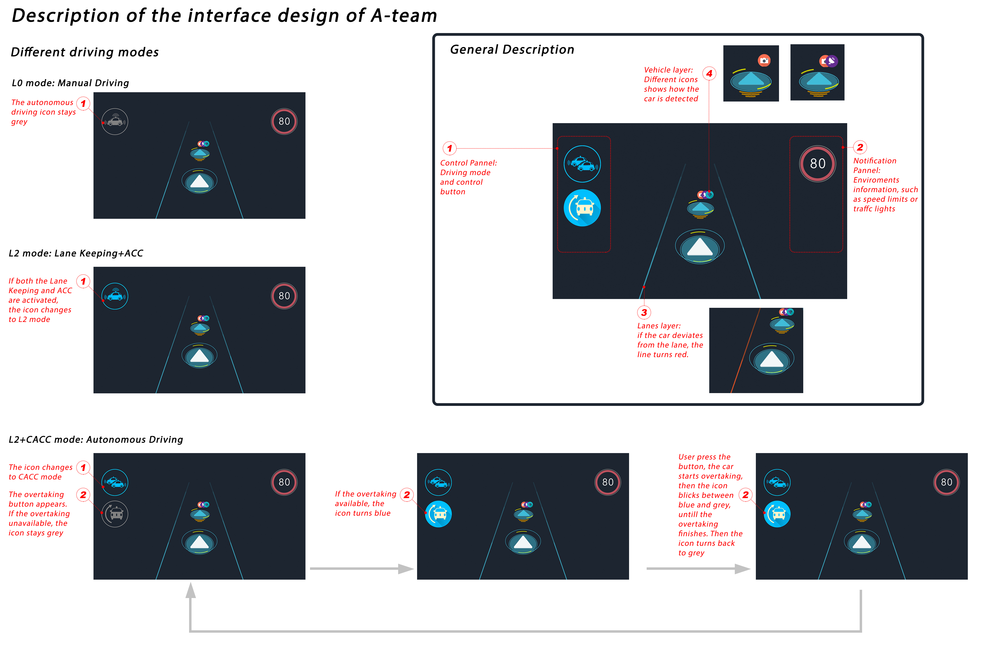
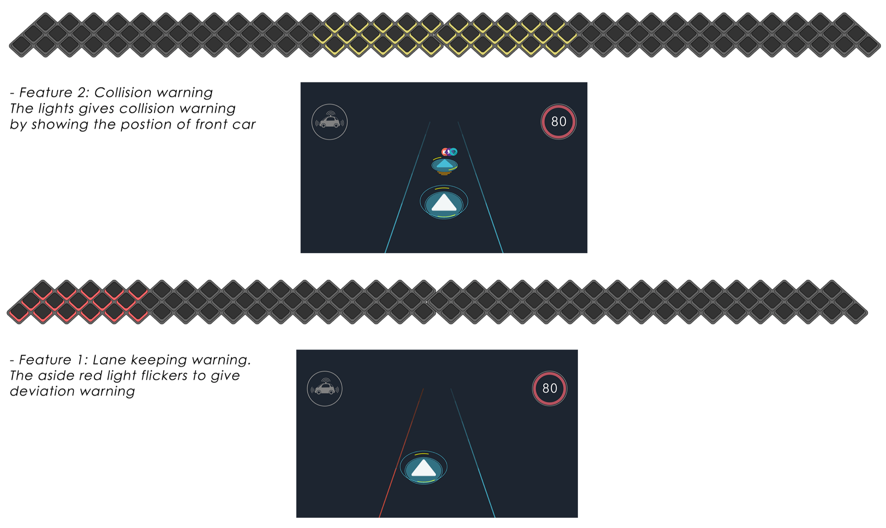
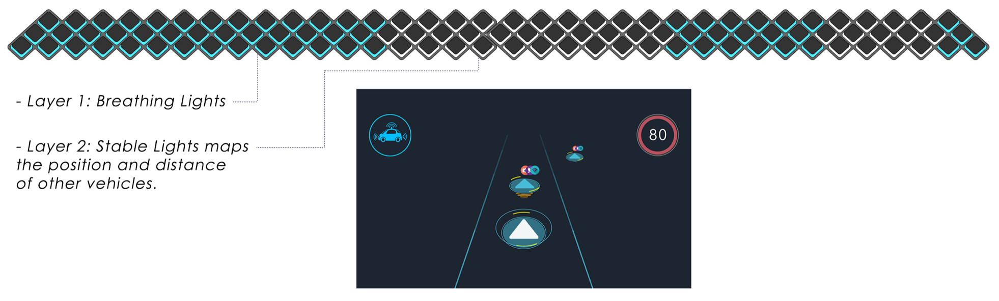
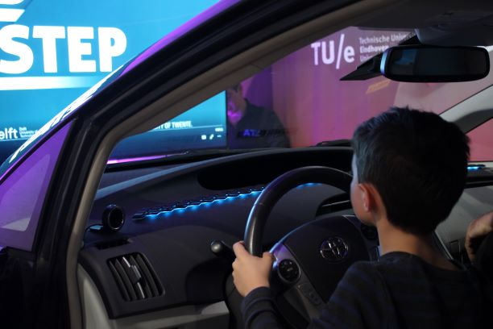
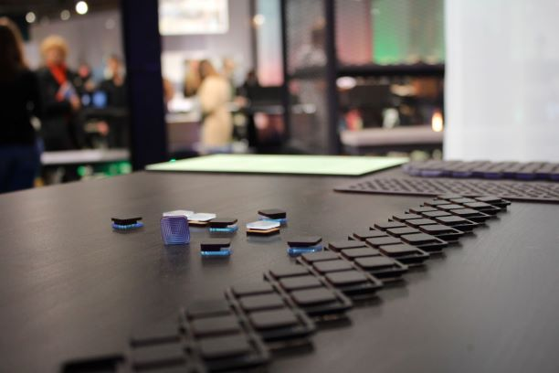
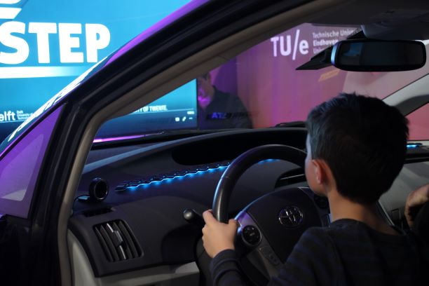
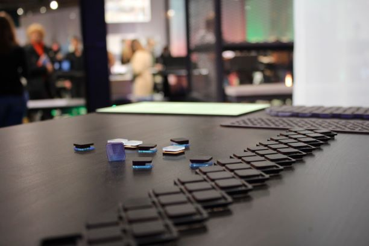

HMI design exploration of autonomous driving vehilce
Designed the interface of the autonomous driving car of “A-Team” which is supported by Eindhoven University of Technology and NXP.
The Automotive Technology team (ATeam) is a team from Eindhoven which consists of students and employees of Fontys Eindhoven and the TU/e. The people in the team have different backgrounds, but all of them share the passion for autonomous driving and are specialised in different aspects related to Automotive Technology. As such, the ATeam is a multidisciplinary team whose expertise covers the many fields related to autonomous driving, such as wireless communication, logistics, embedded systems, software engineering, management, control engineering, safety engineering, electrical engineering and human-machine interaction.
My task here is combing screen based interface with the ambient lighting system to provide situational awareness for Level 1-Level 3 automation.
GUI + Ambient Light
   Ateam in Dutch Design Week 2017:
 


